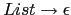
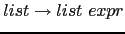
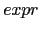

%%.
Por defecto, el símbolo de arranque es el primero que aparece, en este caso
list. En bison es posible hacer que otro variable lo sea
utilizando la declaración %start:
nereida:~/src/precedencia/hoc1> cat -n hoc1.y
1 %{
2 /* File: /home/pl/src/precedencia/hoc1/hoc1.y */
3 #define YYSTYPE double
4 #include <stdio.h>
5 %}
6 %token NUMBER
7 %left '+' '-'
8 %left '*' '/'
9 %%
10 list
11 :
12 | list '\n'
13 | list expr { printf("%.8g\n",$2);}
14 ;
15
16 expr
17 : NUMBER { $$ = $1;}
18 | expr '+' expr {$$ = $1 + $3;}
19 | expr '-' expr {$$ = $1 - $3;}
20 | expr '*' expr {$$ = $1 * $3;}
21 | expr '/' expr {$$ = $1 / $3;}
22 ;
23
24 %%
25
26 extern FILE * yyin;
27
28 main(int argc, char **argv) {
29 if (argc > 1) yyin = fopen(argv[1],"r");
30 yydebug = 1;
31 yyparse();
32 }
33
34 yyerror(char *s) {
35 printf("%s\n",s);
36 }
int.
El fichero yyin (líneas 26 y 29) es definido en el fichero conteniendo el analizador léxico lex.yy.c . Refiere al fichero de entrada conteniendo el texto a analizar.
Al poner la variable yydebug a 1 activamos el modo depuración. Para que la depuración se haga efectiva es necesario definir además la macro YYDEBUG .
El analizador sintáctico proveido por yacc se llama yyparse
(línea 31). Por defecto su declaración es int yyparse ()
nereida:~/src/precedencia/hoc1> cat -n hoc1.l
1 %{
2 #include "y.tab.h"
3 extern YYSTYPE yylval;
4 %}
5 number [0-9]+(\.[0-9]+)?([eE][+-]?[0-9]+)?
6 %%
7 {number} { yylval = atof(yytext); return NUMBER; }
8 .|\n { return yytext[0];}
9 %%
10 int yywrap() { return 1; }
Al compilar el program yacc con la opción -d
se produce además del fichero y.tab.c conteniendo el
analizador sintáctico un fichero adicional de cabecera y.tab.h
conteniendo
las definiciones de los terminales:
nereida:~/src/precedencia/hoc1> yacc -d -v hoc1.y
nereida:~/src/precedencia/hoc1> ls -lt | head -4
total 200
-rw-rw---- 1 pl users 2857 2007-01-18 10:26 y.output
-rw-rw---- 1 pl users 35936 2007-01-18 10:26 y.tab.c
-rw-rw---- 1 pl users 1638 2007-01-18 10:26 y.tab.h
nereida:~/src/precedencia/hoc1> sed -ne '27,48p' y.tab.h | cat -n
1 #ifndef YYTOKENTYPE
2 # define YYTOKENTYPE
3 /* Put the tokens into the symbol table, so that GDB and other debuggers
4 know about them. */
5 enum yytokentype {
6 NUMBER = 258
7 };
8 #endif
9 /* Tokens. */
10 #define NUMBER 258
.. .........................................................
15 #if ! defined (YYSTYPE) && ! defined (YYSTYPE_IS_DECLARED)
16 typedef int YYSTYPE;
17 # define yystype YYSTYPE /* obsolescent; will be withdrawn */
18 # define YYSTYPE_IS_DECLARED 1
19 # define YYSTYPE_IS_TRIVIAL 1
20 #endif
21
22 extern YYSTYPE yylval;
La variable yylval (líneas 3 y 7 del listado 11.1.2)
es declarada por el
analizador sintáctico y usada por el analizador
léxico. El analizador léxico deja en la misma el valor semántico
asociado con el token actual.
Para compilar todo el proyecto usaremos el siguiente fichero Makefile:
> cat Makefile
hoc1: y.tab.c lex.yy.c
gcc -DYYDEBUG=1 -g -o hoc1 y.tab.c lex.yy.c
y.tab.c y.tab.h: hoc1.y
yacc -d -v hoc1.y
lex.yy.c: hoc1.l y.tab.h
flex -l hoc1.l
clean:
- rm -f y.tab.c lex.yy.c *.o core hoc1
yydebug = 1; justo antes de la llamada a
yyparse() y ejecutamos el programa resultante:
$ hoc1 yydebug: state 0, reducing by rule 1 (list :) yydebug: after reduction, shifting from state 0 to state 1 2.5+3.5+1Introducimos la expresión
2.5+3.5+1. Antes que incluso ocurra la entrada, el algoritmo LR reduce por la regla

.
yydebug: state 1, reading 257 (NUMBER)
yydebug: state 1, shifting to state 2
yydebug: state 2, reducing by rule 4 (expr : NUMBER)
yydebug: after reduction, shifting from state 1 to state 4
yydebug: state 4, reading 43 ('+')
yydebug: state 4, shifting to state 5
yydebug: state 5, reading 257 (NUMBER)
yydebug: state 5, shifting to state 2
yydebug: state 2, reducing by rule 4 (expr : NUMBER)
yydebug: after reduction, shifting from state 5 to state 6
yydebug: state 6, reducing by rule 5 (expr : expr '+' expr)
Observe como la declaración de la asociatividad a izquierdas %left '+' se traduce en la reducción por la regla 5.
yydebug: after reduction, shifting from state 1 to state 4
yydebug: state 4, reading 43 ('+')
yydebug: state 4, shifting to state 5
yydebug: state 5, reading 257 (NUMBER)
yydebug: state 5, shifting to state 2
yydebug: state 2, reducing by rule 4 (expr : NUMBER)
yydebug: after reduction, shifting from state 5 to state 6
yydebug: state 6, reducing by rule 5 (expr : expr '+' expr)
yydebug: after reduction, shifting from state 1 to state 4
yydebug: state 4, reading 10 ('\n')
yydebug: state 4, reducing by rule 3 (list : list expr)
7
La reducción por la regla

produce la ejecución
del printf("%.8g\n",$2); asociado con la regla y la salida
del valor 7 que constituye el atributo de 
.
yydebug: after reduction, shifting from state 0 to state 1 yydebug: state 1, shifting to state 3 yydebug: state 3, reducing by rule 2 (list : list '\n') yydebug: after reduction, shifting from state 0 to state 1 yydebug: state 1, reading 0 (end-of-file) $En Unix la combinación de teclas CTRL-D nos permite generar el final de fichero.